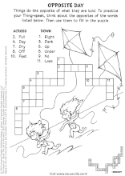
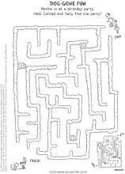
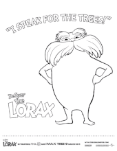
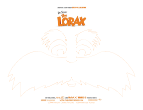
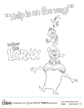

Dr. Seuss Printables
The Cat in the Hat (2003)

.pdf file (81 KB)

.pdf file (99.5 KB)
The Lorax (2011)

.pdf file (82.7 KB)

.pdf file (764 KB)

.pdf file (65.1 KB)
 .pdf file (81 KB).pdf file (99.5 KB)
.pdf file (81 KB).pdf file (99.5 KB) .pdf file (81 KB).pdf file (99.5 KB).pdf file (82.7 KB).pdf file (764 KB).pdf file (65.1 KB)
.pdf file (81 KB).pdf file (99.5 KB).pdf file (82.7 KB).pdf file (764 KB).pdf file (65.1 KB)